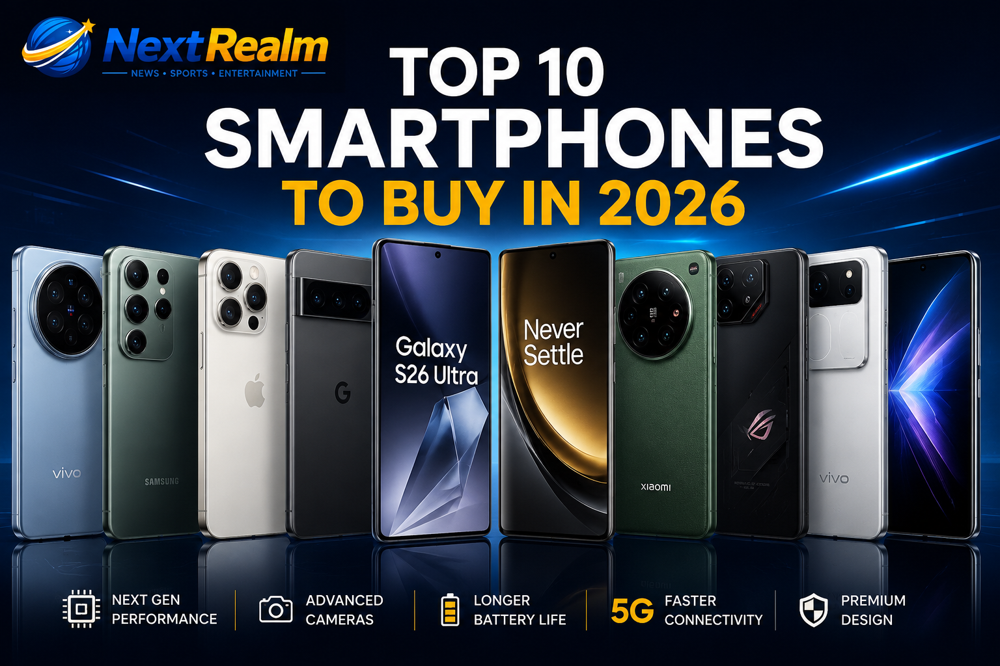

Published: 23 July 2026
Category: Technology

Top Smartphones of 2026
Smartphones in 2026 are more powerful than ever. Manufacturers are competing in camera technology, artificial intelligence, gaming performance, battery life, and premium design. Here are the top 10 smartphones worth considering in 2026.
Welcome to our list of the Top 10 Smartphones to Buy in 2026.
Best for: Productivity and cameras.
Display: Outstanding.
Battery: Excellent.
AI Features: Excellent.
Camera Quality: Exceptional.
Best for: Premium users and content creators.
Display: Excellent.
Battery: Excellent.
Performance: Exceptional.
Video Recording: Industry-leading.
Best for: AI features and photography.
Android Experience: Best.
Camera Software: Outstanding.
Best for: Speed and charging.
Charging Speed: Exceptional.
Performance: Flagship level.
Best for: Camera enthusiasts.
Leica Cameras: Outstanding.
Premium Display: Excellent.
Best for: Mobile gaming.
Cooling System: Exceptional.
Gaming Accessories Support: Excellent.
Best for: Portrait photography.
Camera Performance: Excellent.
Premium Build Quality: Outstanding.
Best for: Value and flagship performance.
Battery Life: Excellent.
AI Capabilities: Outstanding.
Best for: Unique design.
Clean Android Experience: Excellent.
Glyph Interface: Innovative.
Best for: Overall flagship experience.
Camera Quality: Excellent.
Premium Design: Outstanding.
Samsung Galaxy S26 Ultra – Best Overall Smartphone of 2026.
iPhone 18 Pro Max – Best Premium Smartphone for Apple users.
Google Pixel 11 Pro – Best AI Smartphone and Photography Experience.
OnePlus 15 Pro – Best Performance and Fast Charging.
Xiaomi 17 Ultra – Best Camera Smartphone.
ASUS ROG Phone 10 – Best Gaming Smartphone.
Vivo X300 Pro – Best Portrait Photography Smartphone.
Honor Magic 9 Pro – Best Value Flagship Smartphone.
Nothing Phone (4) – Best Smartphone Design.
Oppo Find X10 Ultra – Best All-round Android Flagship.
If you're looking for the best all-round smartphone in 2026, the Samsung Galaxy S26 Ultra and iPhone 18 Pro Max remain excellent choices. Gamers will love the ASUS ROG Phone 10, while photography enthusiasts should consider the Xiaomi 17 Ultra, Vivo X300 Pro, or Google Pixel 11 Pro. No matter your budget or needs, 2026 offers an impressive lineup of flagship smartphones that combine power, beauty, and cutting-edge technology.